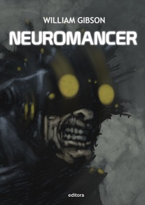
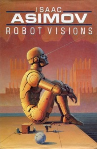

Neuromancer
William Gibson

Neuromancer is a 1984 novel by William Gibson, a seminal work in the cyberpunk genre and the first winner of the science-fiction "triple crown" — the Nebula Award, the Philip K. Dick Award, and the Hugo Award.[1] It was Gibson's debut novel and the beginning of the Sprawl trilogy. The novel tells the story of a washed-up computer hacker hired by a mysterious employer to pull off the ultimate hack.
Robot Visions
Isaac Asimov

Robot Visions (1990) is a collection of science fiction short stories and factual essays by Isaac Asimov. Many of the stories are reprinted from other Asimov collections, particularly I, Robot and The Bicentennial Man and Other Stories. It also includes the title story, "Robot Visions" (written specifically for this collection[1]), which combines Asimov's motifs of robots and of time travel. It is the companion book to Robot Dreams.